Автомобильные стёкла и решения для разных комплектаций.
ПОДБОР ПО АВТОМОБИЛЮМосква и область · наши центры+
СЕТЬ СЕРВИСНЫХ ЦЕНТРОВ · С 2007 ГОДА
Чистый обзор.Точная работа.
Подберём стекло для вашего автомобиля.
Аккуратно установим. Будем рядом после.
19лет в работе5 летгарантия на вклейку*
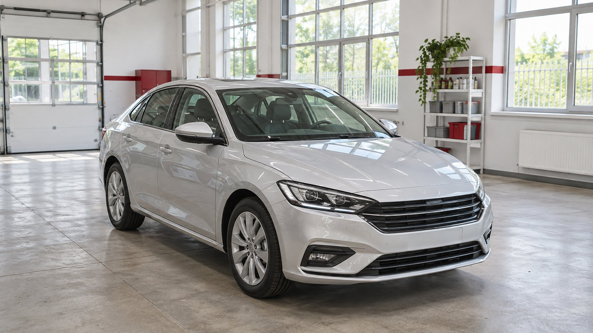
с правильного стекла.↗
ПРОИЗВОДИТЕЛИ СТЁКОЛКачество начинается
Качество начинается
с самого стекла.
Объясним отличия.
Проверим совместимость.
Стёкла для широкого круга марок и моделей автомобилей.
ОРИГИНАЛЬНЫЙ ПРОИЗВОДИТЕЛЬ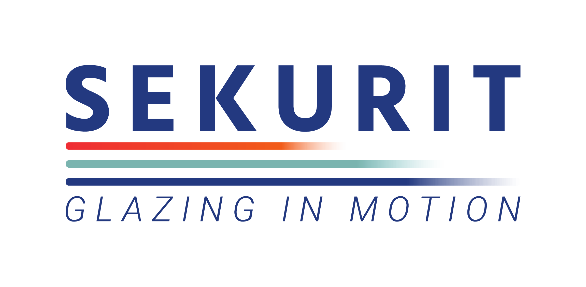
Стёкла с необходимыми креплениями и дополнительными опциями.
ВНИМАНИЕ К КОМПЛЕКТАЦИИ
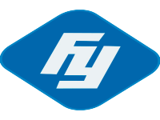


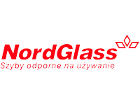
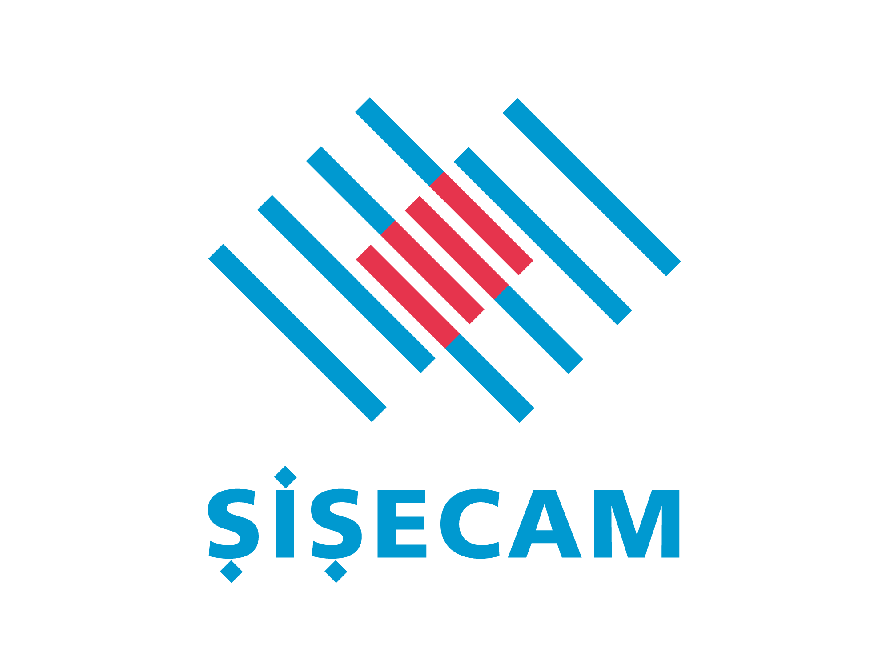

Точная установка. Свободная дорога.
Каждое стекло —
на своём месте.
Подбираем под ваш автомобиль.
Устанавливаем с вниманием к деталям.
И вы снова в пути.
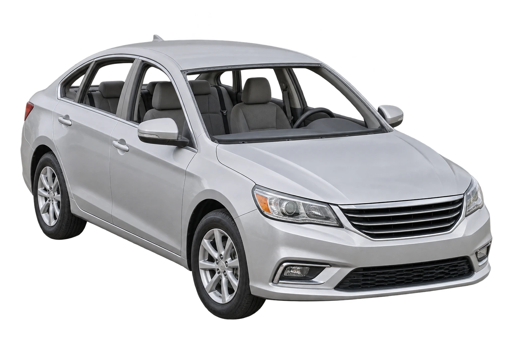
- 01Подбираем
Учитываем модель и комплектацию.
- 02Устанавливаем
Точная посадка каждого стекла.
- 03Можно ехать
Проверяем результат и передаём автомобиль.
ПОДБОР ПО КОМПЛЕКТАЦИИБольше, чем
Больше, чем
просто стекло.
Нажмите на опции и посмотрите,
что важно учесть при замене.
ЛОБОВОЕ СТЕКЛО / ВАША КОМПЛЕКТАЦИЯ
Выберите опции справа — стекло оживёт.
01 / ОТМЕТЬТЕ ЗНАКОМЫЕ ОПЦИИСохраним всё,
Сохраним всё,
к чему вы привыкли.
Не знаете комплектацию? Оставьте опции пустыми — поможем разобраться. Совместимость проверит специалист.
01Зачем учитывать опции?+
Проверяем площадку камеры, крепления датчиков, обогрев и проекцию. Это помогает сохранить функции, предусмотренные комплектацией автомобиля.
02Что понадобится для подбора?+
Марка, модель и год выпуска. При необходимости менеджер попросит уточнить комплектацию или прислать фотографию маркировки стекла.
Наши услугиЗабота об автомобиле.
Забота об автомобиле.
Точность в деталях.
От небольшого скола до нового стекла.
Все необходимые услуги — в одном месте.
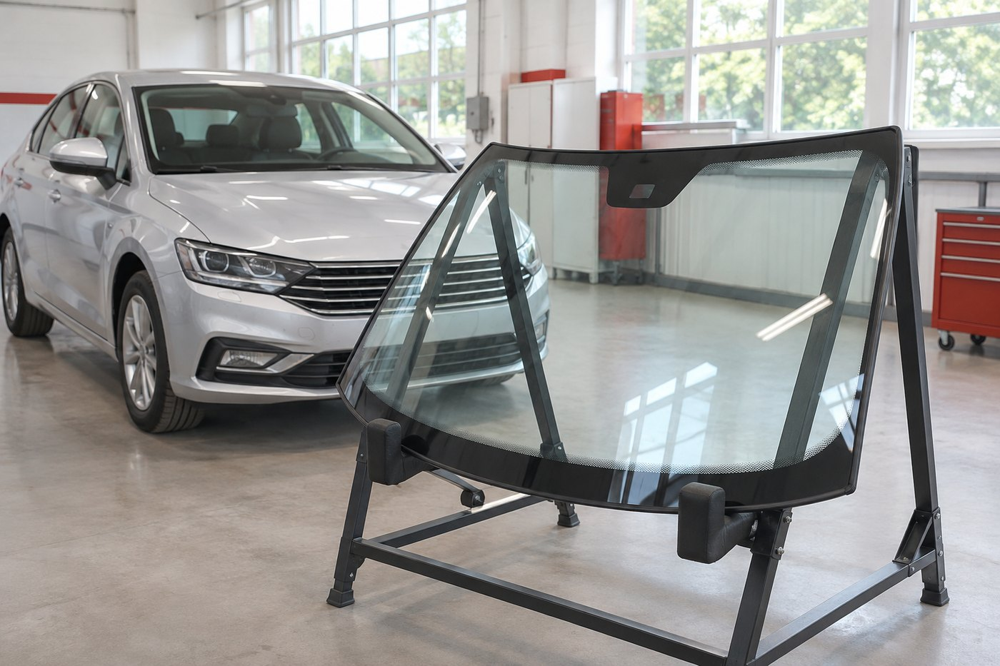
01 / АВТОСТЁКЛАXL GROUPP
Чистый обзор.
С любого места.
Лобовые, боковые и задние стёкла. Подбираем по автомобилю и комплектации, аккуратно устанавливаем.
ПодборОТ АНАЛОГА ДО ОРИГИНАЛА
5 лет*ГАРАНТИЯ НА ВКЛЕЙКУ
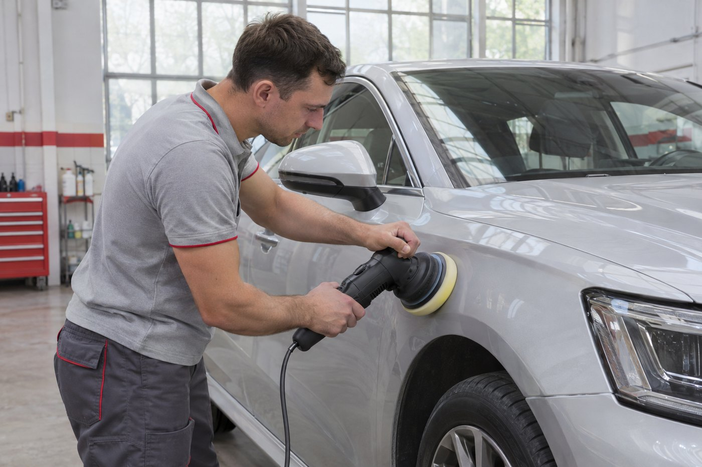
02 / ДЕТЕЙЛИНГXL GROUPP
Внимание
к каждой поверхности.
Возвращаем глубину цвета и ухоженный вид. Подбираем уход за кузовом, оптикой и салоном.
КузовПОЛИРОВКА И ЗАЩИТА
СалонЧИСТОТА И КОМФОРТ
БОЛЬШЕ ВОЗМОЖНОСТЕЙ
Всё, что нужно вашему автомобилю.
КАК МЫ РАБОТАЕМПонятно.
Понятно.
На каждом этапе.
Сначала обсуждаем задачу и стоимость.
Затем берёмся за работу.
/ 01
Уточняем детали
Марка, модель, год и комплектация. Помогаем разобраться с опциями стекла.
/ 02
Согласуем решение
Производитель, состав работ и стоимость. Выбираем удобный центр и время.
/ 03
Работаем аккуратно
Устанавливаем стекло и объясняем рекомендации по уходу после замены.
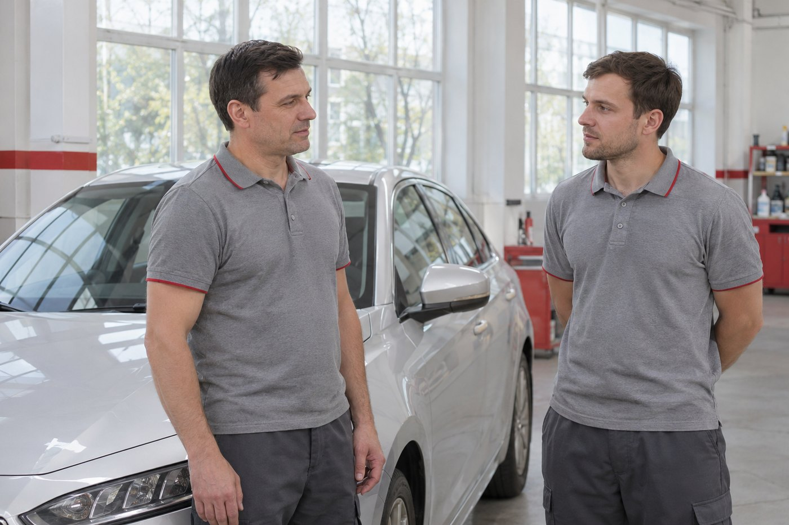
О компанииХорошая работа
Посмотреть выполненные работы *Условия зависят от состояния рамки и соблюдения рекомендаций.
Хорошая работа
начинается
с внимания.
Автостекла для иномарок в Москве, автобусов и строительной техники.
Сеть оптово-розничных складов и установочных центров.
У нас Вы можете приобрести любые виды автостекол, комплектующих, материалов и инструментов для ремонта и замены автостекол любых мировых производителей:
- оригинальные
- оригинальных производителей
- неоригинальные
Наша компания на рынке автомобильных стекол уже больше 18 лет!!!
Колоссальный опыт работы и узкая направленность нашей деятельности, а так же наличие собственных складов с широким ассортиментом автомобильных стекол, комплектующих и материалов позволяет нам предлагать нашим клиентам:
Читать дальшеСвернуть текст
- самые низкие цены на автостекла и комплектующие
- широкий ассортимент от самых дешевых запчастей до оригиналов
- оперативная доставка в любую точку Москвы и области
- качественное и гарантийное выполнение работ по замене и ремонту автостекол
Мы производим замену, ремонт и установку автостекол в Москве и Московской области в наших специализированных, оборудованных самым современным оборудованием сервисных центрах.
Наша компания является официальным представителем большинства заводов-изготовителей автомобильных стекол. Приобретая автостекла у других компаний знайте, что скорее всего оно было куплено именно у нас!!!
Не переплачивайте, обращайтесь именно к нам напрямую, и мы гарантируем Вам экономию и качество!!!
19летВ АВТОСТЁКЛАХ
5летГАРАНТИИ НА ВКЛЕЙКУ*
НАШИ ЦЕНТРЫБлиже,
Ближе,
чем кажется.
Москва и область.
Выберите удобный для вас центр.
Осознанный выборОригинал или аналог?
Оригинал или аналог?
Выбираем по делу.
Сравним подходящие варианты по производителю, комплектации и стоимости. Поможем понять, за что вы платите.
Стекло с маркировкой автопроизводителя
Подбирается с учётом модели и конкретной комплектации.
Стекло под маркой завода
Проверяем характеристики, оснащение и совместимость.
Другие производители
Обсуждаем доступные варианты под ваши задачи и бюджет.
ОтзывыЗа каждой работой —
Все отзывы За каждой работой —
чьё-то доверие.
Быстро, качественно поставили боковое стекло. Всем рекомендую. Персонал вежливый.
Поставили стекло лобовое на BMW за 40 минут. Есть Wi-Fi, бесплатный чай и кофе.
Широкий ассортимент стёкол, разных производителей на любой вкус, быстрая замена с гарантией.
Наши клиенты
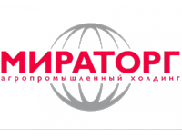
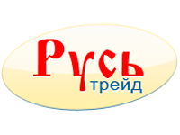
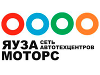
ПреимуществаДелаем больше,
Делаем больше,
чем просто меняем стекло.
От выбора производителя до рекомендаций
по уходу после установки.
Гарантия 5 лет
На работы по вклейке стекла, с понятными условиями.
Условия гарантии ↗В любой сезон
Оборудованные центры для работы круглый год.
Премиальные стёкла
Специальные предложения на отдельные позиции.
Автовизитка в подарок
Полезная деталь для повседневных поездок.
Купон на скидку
Условия действующих предложений уточнит менеджер.
−10% на шиномонтаж
При заказе автостекла в нашем техцентре. Уточняйте условия.
Жизнь компанииСервис, который
СОБЫТИЯ ИЗ АРХИВА КОМПАНИИСервис, который
развивается.
На связи
Начнём с вашего автомобиля.
Расскажите, что нужно сделать.
Поможем с выбором и стоимостью.
Оставить заявкуВсё начинается